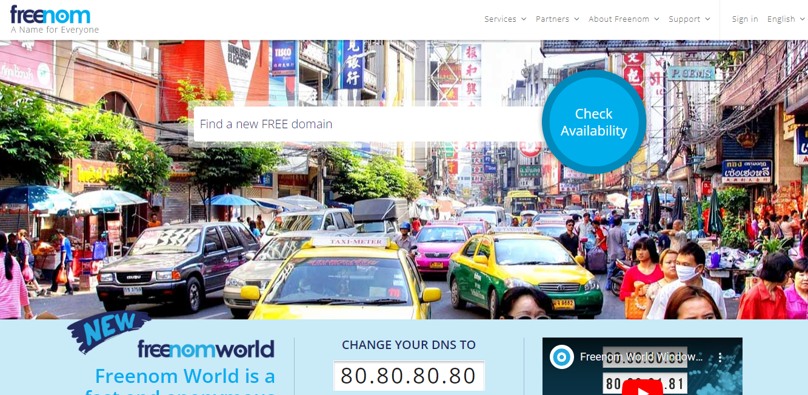
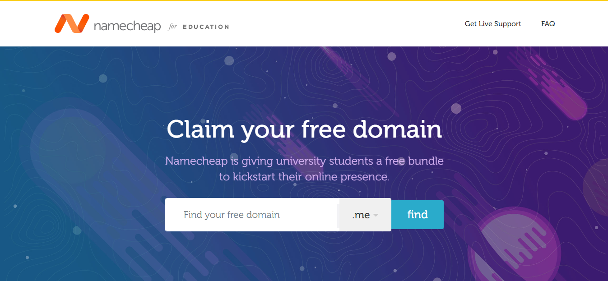
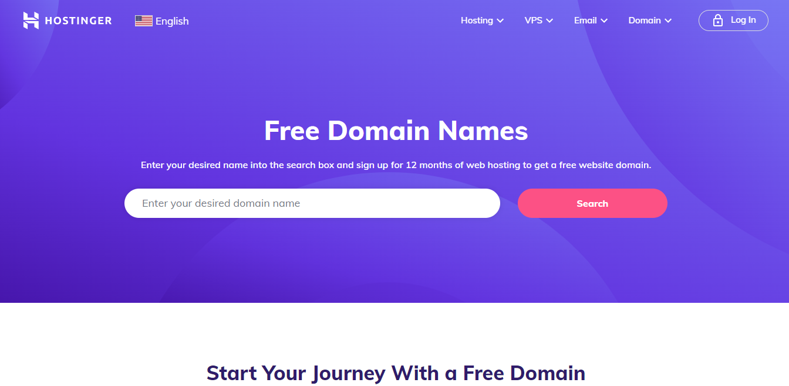
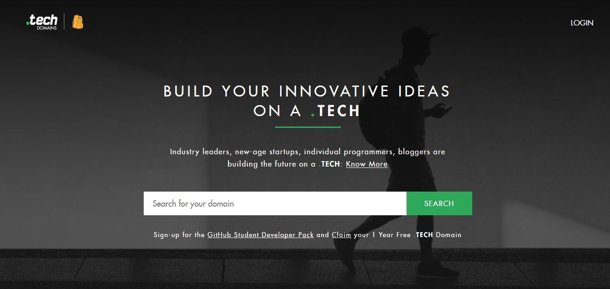
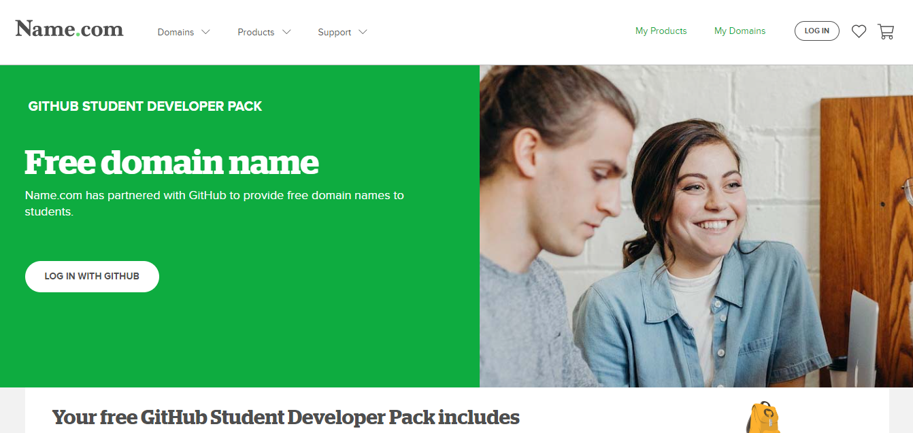
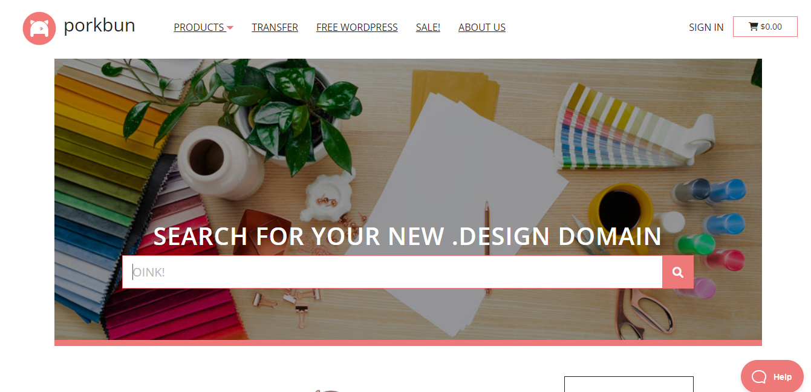

Top best Free Domain Service Provider Sites
Here is a list of popular free Domain services:
1. Freenom
 The free domains are absolutely the best reason to choose Freenom, and the free WHOIS protection is a solid feature that should be standard everywhere. However, with the sparse UI, the limited feature set, and the unfortunate lack of full support for free domains, I can’t say that Freenom is one of the “best” domain name registrars.
You’d easily be better off going with Domain.com or Namecheap, as these registrars have loads of extra features to help you configure and protect your domain.But Freenom gives you free domain and provide many features, which is why it's top of our best free domain provider list.
Only the .tk, .ml, .ga, .cf, and .gq domains are free. And even then, you have to follow certain rules (no adult or gambling sites, no domain parking) and make sure to renew every year. And you can’t use popular keywords alone as your domain. Those are always expensive. Lastly, you don’t “own” your free domain, and it can be taken away at the discretion of the people who own the domain extension.
It’s no more or less safe than just about any other online service. From the perspective of a tech nerd, that’s a little bit terrifying because this whole system is a bit fragile and modern life depends… well, that’s a rant for another day.My point is, the company is legit. You need not worry too much about handing over your credit card information. And technically, you don’t need to hand it over at all.
2. Namecheap
For almost 20 years, Namecheap has been dedicated to making the internet accessible and affordable. In 2014, after years of championing this mission, leaders within the company came upon a unique opportunity to help spread innovation and creativity to the business leaders of tomorrow. This discovery led to the Namecheap University initiative, a program that has now helped more than 200,000 students by offering free domain names paired with complimentary website tools.
Through this initiative, anyone with an active .edu email address is eligible to receive a bundle of resources. This includes access to GitHub Pages and a .me website at no charge for one full year. Students, educators, and administrators can use these tools to create online resumes, publish their research, or participate in coding competitions.
Students and educators can still claim their free domain by visiting nc.me. While the initiative was originally designed to support individuals in higher education, the offering has also become a core part of the syllabus in several high school and college tech programs. Namecheap has incorporated the nc.me program into popular technology events and hackathons, giving participants access to domains and a selection of free web building resources.
In addition to the nc.me initiative, Namecheap also supports higher education programs like New York On Tech, who provide digital training to underrepresented high school students in the NYC area. The program helps students prepare for both academic and professional success, by offering real-world experience and creating connections with technology industry experts.
3. Hostinger
Hostinger is a premium domain provider site but you can register free premium domain in Hostinger. To get a free domain name, you just need to purchase one of our Premium or Business shared hosting, WordPress hosting, or Cloud hosting plans. Free domain registration is available for the first year.
The free domains include .com and other professional extensions to help establish your site’s credibility.The free extensions that are available for registration at Hostinger are: .net, .xyz, .com, .online, .link, .shop, .live, .digital, .tech, .space, .website, .email, .fun, .click, .site, .uno, .in, .host, .store, .press, .me, .help.
No. You only need to pay for the web hosting plan, and afterwards, you can register a domain name for free for one year. This deal also includes a free SSL certificate to secure your website further and run it on HTTPS.Once the first year is up, the only other cost will be the renewal fee for the domain name registration
These domain extensions are all highly reputable and in demand, so grab yours while it’s available.
4. Get.tech
Do you want to reach your target audience and build your company name and credibility? Every great business idea started small, and reach milestones with the help of the budding internet presence. Get. tech is a free domain service provider, and its plans, features, and packages suit every student’s needs.
.Tech domains are normally denotes individuals or companies who work related to some technical field such as Web developers, information security analysts, systems administrators, research firms and tech bloggers.
Basically, .Tech domain is not free for all.It is only available for the students for who already have joined the GitHub Student Developer Pack. one year.If you are a student with an official email address you can get a FREE .tech domain name with privacy protection from get.tech for a whole year.
Since get.tech domain has an exclusive free domain service for students, you get to avail of it if you meet all the criteria for eligibility. First, you must sign up for the GitHub Student Developer Pack. Later, visit the .tech domain website and type in your desired domain name. Follow-through by checking all the available domain options that appear on your screen and choose the one you see suitable.
5. Name.com
Want to take all the advantages you can get in your student life? In this phase of life when you are expected to live frugally, purchasing a domain name seems redundant. Who wants to spend more money on things you can get for free? With name.com, you can enjoy the rare benefits of being a student and access your own free domain. Make the most out of these opportunities and other features that name.com provides in their free domain names for students pack.
This offer of a free domain for students from name.com is a collaboration with GitHub Education. You get to own a free TrueName domain for one year after registration and you also gain access to additional features.
To access the free domain for students offers package from Name.com, you have to gain access to the GitHub Student Developer Pack.
Visit the GitHub collaboration with Name.com website for the free domain for students offer and log in with your GitHub credentials. Make your choices for domain on the search along with TLD and proceed with the best available options that show on your screen. Choose wisely according to your wishes and think about its suitability prior to making your final decision for free domain for students.
6. Porkbun
It’s the season of giving, and Porkbun is offering designers, artists, and creatives the rare chance to score a .design domain name for free!With this special offer, you get the .design domain name of your choice free for one year, plus tons of other exciting goodies like a free Weebly Site Builder trial, email hosting and free email forwarding, free WHOIS privacy, free SSL security, and free hosting options. Now that’s a big holiday bonus!
If you’re a designer, you understand the importance of smart presentation. This special, limited-time offer is the perfect opportunity for you to spruce up your digital portfolio or refresh your online branding. A .design domain allows you to create a more succinct, powerful, and memorable URL and email address. It’s a great way to assert yourself and improve your contact with customers, whether you’re a freelancer, web developer, or a creative studio — or maybe you just have extremely good taste in domains!
This site provide not only .design beside that they also provide .app or .dev for free for one year. Short and simple to type, .app and .dev offer instant visibility to debut your products in a community that gets it.
Get your first year of .app or .dev for free.* For developers, engineers, and masters of your craft. For individuals or businesses big and small. Give your product a fitting home on a domain designed to showcase your work.
Both .app and .dev domains come with heightened security that benefits you and your visitors. All .app and .dev sites require HTTPS encryption, so you can register with confidence and keep your connections secure no matter where you go.
Best free domain service website FAQs
Pros and cons of free Domain
Pros
1. Free domains offer one year free domain registration. so these free domains are useful for blogs or websites which remain alive less than one year.
2. These are useful for websites of college fests,events,competitions etc. because these websites are used only till the completion of the event. after that they are not useful so registering a free domain for this type of websites may save money.
3. Useful for bloggers who want to maintain a blog just upto a period of one yearor less than that.
4. many of the short period websites will depend on free domains inorder to save money. so these free domains are a gift to some of the short period websites.
Cons
1. Free domain offer domain registration free for only one year. After that you should pay for renewal for that domain. These are useful for only short period websites. If you want to develop a website/blog for a long period, then don’t go for free domains.
2. Free domains can't be indexed in search engines easily. if you want a good seo for your blog/website, then forget about free domains and go for a paid domain.
3. Google may ban the free domains. if it happens to your domain service then your blog/website will be no more available in search engines. google has banned .co.cc domain in past(now it is accepting). so if it repeats again then your website will be no more visible in search engines.
4. When you go for a free domain after one year you should change your domain. so when you change your domain after one year then you may loose all your visitors, seo, page rankings, back links, etc.